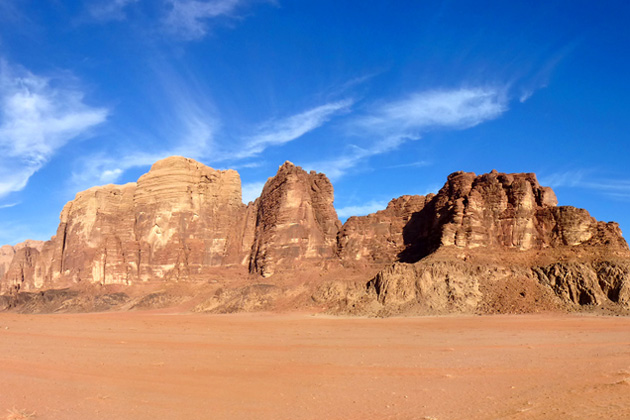
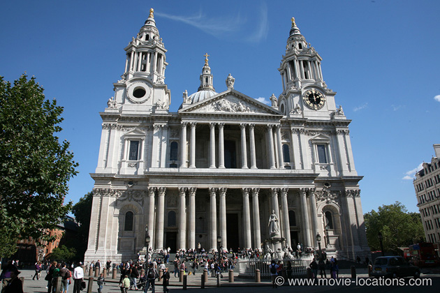
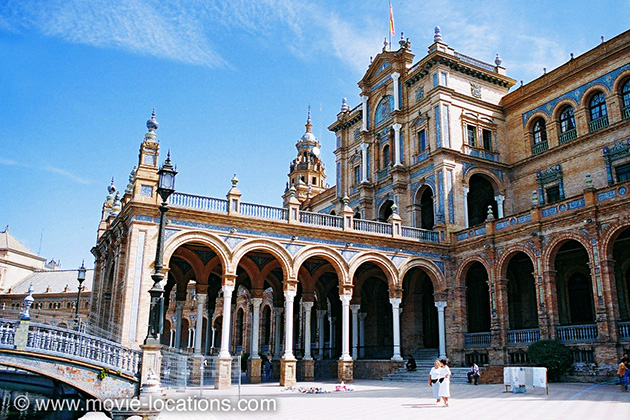
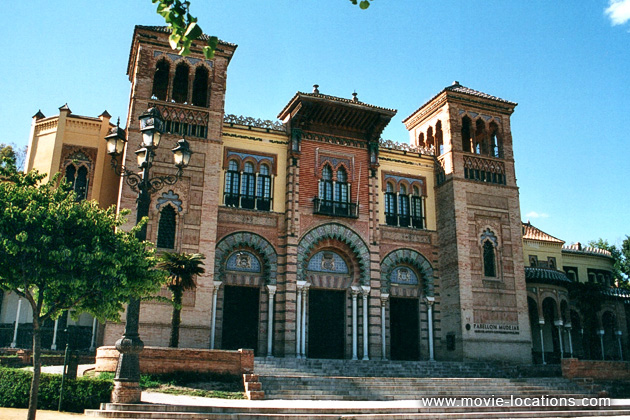
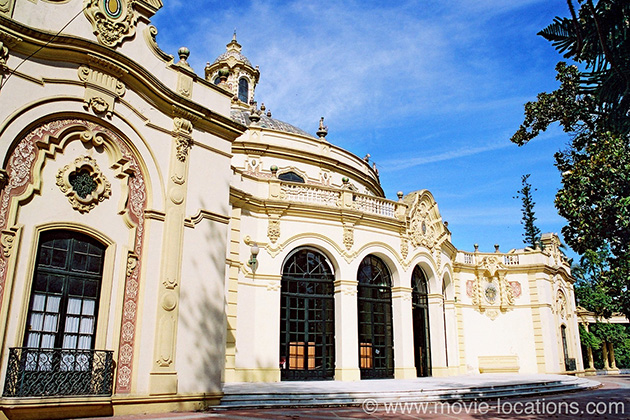
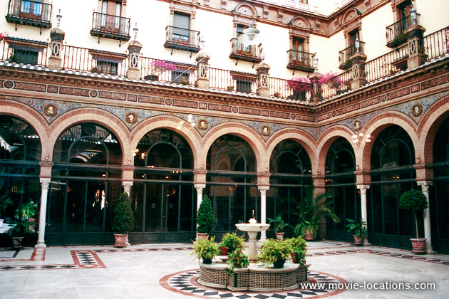
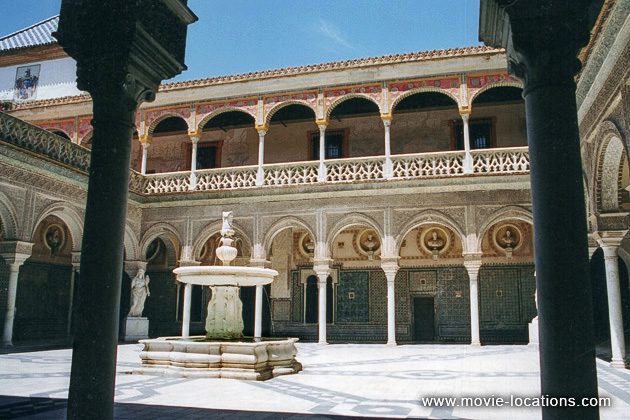

Lawrence Of Arabia
Main Content

Discover where David Lean's classic Lawrence Of Arabia (1962) was filmed, in Jordan; in Seville, southern Spain; Morocco; and London and Surrey in the UK.
Most of the locations for David Lean’s last really great film, before his taste for the overblown tipped over into pomposity, can be found – despite appearances – in Spain.
The memorial service for TE Lawrence (Peter O’Toole) did actually use the steps in front of St Paul’s Cathedral in London, but even here, the interior was recreated in a Spanish studio. David Lean had already filmed at St Paul’s, back in 1946, for his classic adaptation of Charles Dickens’ Great Expectations.

The town of’ ‘Aqaba’ was built at a beach called Playa del Algarrobico near Carboneras, close to Almeria in southern Spain. The attack on the train filmed at Genovese Beach, San Jose on Cabo de Gata (Cape of the Cat) nearby.

For many of the ‘Middle Eastern’ settings, Lean used the heavily Moorish city of Seville, particularly the vast complex of buildings in the Parque de Maria Luisa, Avenida de Isabel la Catolica, built for the disastrous 1929 Spanish-American exhibition.

Here you can find the ‘Cairo’ officers' club, where Lawrence’s companion is refused a drink after the desert crossing, which is the, currently empty and rather dilapidated, Palaçio Español, a semi-circular arcaded building in the Plaza de España (seen more recently as the exterior of ‘Naboo's Theed palace’ in Star Wars Episode II: Attack of the Clones, and as the presidential palace of ‘Wadiya’ in Sacha Baron Cohen comedy, The Dictator).

‘Jerusalem’s civic buildings’ are the Plaza of the Americas just to the south (seen as ‘Tangier’ in John Milius’s 1975 epic The Wind and the Lion, with Candice Bergen and Sean Connery), while ‘Damascus’ town hall, the Arab council chamber, is the nearby circular El Casino, Avenida de Maria Luisa.

Also in Seville is the courtyard of the Officers’ Club, which is the central court of the luxurious, though extremely friendly, Hotel Alfonso XIII, 2 San Fernando 41004.

Lawrence and General Allenby (Jack Hawkins) meet in another Seville landmark, the Casa de Pilatos, Plaza de Pilatos, built in 1519, the claim that it’s a copy of Pontius Pilate’s – surprisingly 16th century – Jerusalem home, sadly, seems to be a myth. During the performance of a religious play here in the 16th century, the character of Pilate appeared at a window to deliver a short speech, since when the palace was popularly referred to as Pilate´s home. The villa crops up again in Ridley Scott's 1492: Conquest Of Paradise and as the hideout of the main villain in Tom Cruise-Cameron Diaz action comedy Knight And Day.
But of course, the real visual splendour of Lawrence lies in its breathtaking desertscapes, which were filmed in Jordan.
Lawrence’s first introduction to the desert is the black basalt landscape of Jebel Tubayq, near Jordan's Saudi Arabian border, as is much of the trekking and the caravan across the Nefud. The camp of Prince Feisal (Alec Guinness), and the well where Lawrence gets a little bit carried away with his new Arab robes, are the spectacular red cliffs of Wadi Rum, twenty miles north of the Gulf of Aqaba.
The spectacular camel ride entrance of Sherif Ali (Omar Sharif) used the mudflats at Jafr in Jordan (of course, Sharif wasn’t actually in this, his most famous scene), as did the rescue of the lost Gasim (IS Johar).
The opening scene, of Lawrence’s fatal motorbike ride, which in reality took place in Dorset) is Chobham, Surrey.
It’s claimed that more scenes were filmed in Morocco, at Ait Benhaddou, a spectacular village made up of several small kasbahs (fortresses), about fifteen miles northwest of Ouarzazate. Its red towers have been seen in Gladiator, The Last Days of Sodom and Gomorrah and The Jewel of the Nile. The giant, now crumbling, Glaoui Kasbah, about three miles from Ouarzazate on the P31, was converted into a hotel, specially to house the cast..
Extra desert shots were filmed in the United States, on the Imperial Sand Dunes, Highway 78, east of El Centro, southern California close to the Mexican border.
Visit Info
Visit The Film Locations
Jordan
Visit: Jordan
Flights: Queen Alia International Airport, 30 km south of Amman
Visit: Petra, Wadi Musa
Bus: JETT (Jordan Express Tourist Transportation) buses connect to Amman (about 3 hours) and Aqaba via the Desert Highway
Spain
Visit: Spain
Visit: Almería
Flights: Almería Airport, Carretera Níjar, Km 9, 04130 Almería (tel: +34.902.40.47.04)
Visit: the Cabo de Gata-Níjar Natural Park
Visit: Seville
Flights: Seville Airport, A-4, Km. 532, 41020 Sevilla (tel: 34.954.44.90.00)
Stay at: the Hotel Alfonso XIII, Calle San Fernando, 2, 41004 Sevilla (tel: +34.954.91.70.00)
Visit: the Plaza de España, Avenida de Isabel la Católica, 41004 Sevilla
Visit: the Casa de Pilatos, Plaza de Pilatos, 1 - 41003 Sevilla (tel: +34.954.22.52.98)
Morocco
Visit: Morocco
Visit: Marrakech
Flights: Marrakech Menara Airport, Ménara, Marrakech 40000 (tel: +212.5244.47910)
Visit: Ouarzazate
UK | London
Flights: Heathrow Airport; Gatwick Airport
Visit: London
Travelling: Transport For London
UK | Surrey
Visit: Surrey
California
Visit: California